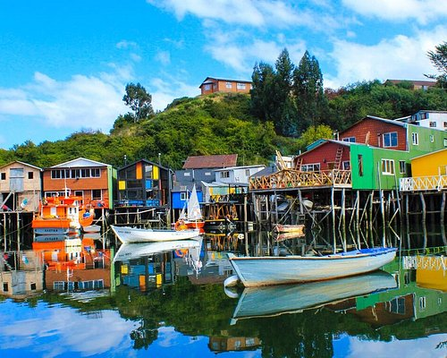
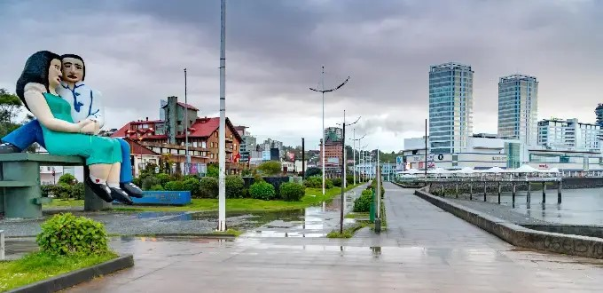
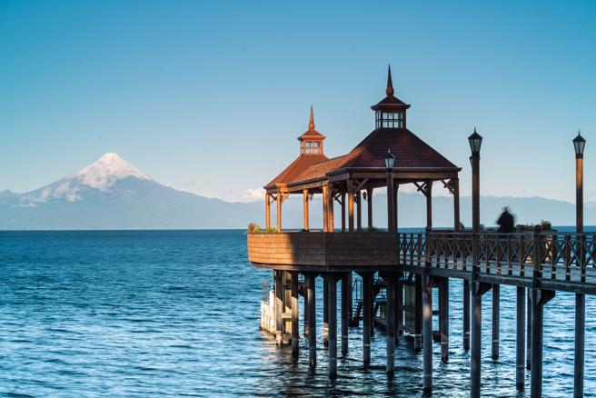
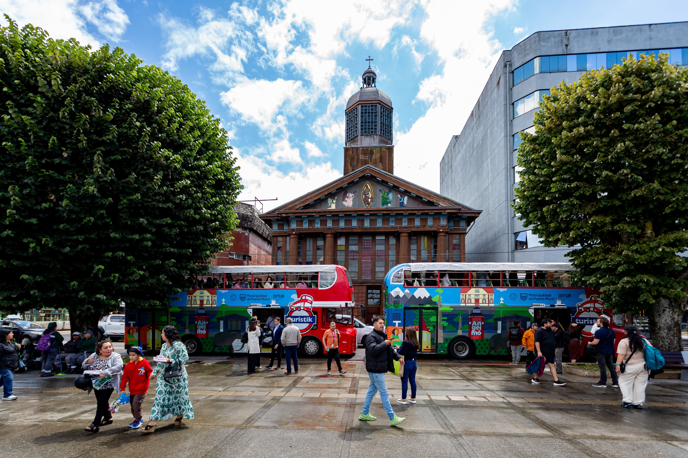
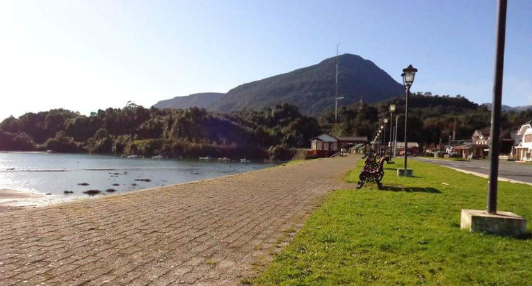

Historia de Puerto Aurora
La historia de Puerto Aurora comienza en 1878, cuando un pequeño grupo pescadores se instalo al rededor de una bahia natural que ofrecia proteccion contra las grandes tormentas del oceano. Segun la tradicion local, el nombre de la ciudad surgio una mañana en la que los primeros habitantes observaron como el amanecer iluminaba completamente la bahia. El cielo tomo tonos anaranjosos y rosados que se reflejan sobre el agua, y ese entonces comenzo a llamar al lugar "la bahia de la aurora". Durante sus primeras decadas, la poblacion crecio gracias a la pesca y el comercio maritimo. A comienzos del siglo XX llego el ferrocarril, permitiendo conectar Puerto Aurora con otras ciudades y transformando el pequeño pueblo pesquero en un importante centro comercial. La antigua estacion ferroviaria se convirtio rapidamente en uno e los puntos mas importantes de la ciudad. Con el paso de los años, cuando el transporte ferroviario perdio protagonismo, el edificio queo abanonado. Decadas despues, la estacion fue restaurada y convertida en un espacio cultural, dando origen al actual Centro Cultural La Estacion. Durante la seguna mitad del siglo XX, Puerto Aurora comenzo a desarrollar una nueva actividad: el turismo. La construccion el paseo costero, la restauracion el antiguo faro y la creacion de nuevos espacios culturales hicieron que la ciudad dejara de depender exclusivamente de la activiad portuaria. Actualmente, Puerto Aurora busca mantener un equilibrio entre su pasado y su presente. Sus conservan un fuerte sentimiento de pertenencia hacia la historia maritima de la ciudad, mientras que el arte, la musica y las activiades al aire libre forman parte de su ientidad moderna.

Barrio el Puerto
Es la zona mas antigua el Puerto Aurora. Sus calles conservan construcciones de finales el siglo XIX y principios del siglo XX. El puerto continua funcionando y toavia pueen encontrarse pequeñas embarcaciones pesqueras junto a restaurantes, mercados y puestos de artesanos. Durante los fines de semana es uno de los principales puntos de encuentro de los habitantes.

Costa Aurora
Es la zona turistica por excelencia. Se extiende a lo largo de la costa y cuenta con playas, senderos, espacios verdes y el famoso Faro de Aurora. Durante el verano recibe numerosos visitantes y se realizan actividades deportivas, ferias y espectaculos al aire libre.

Barrio La Estacion
Es uno de los principales sectores culturales de la ciudad. Su principal atractivo es la antigua estacion ferroviaria, actualmente convertida en un centro cultural. En sus alrededores se encuentra librerias, cafes, talleres de artistas y pequeños espacios donde musicos locales realizan presentaciones.

Parque del Sol
Es una de las zonas verdes mas grandes de Puerto Aurora. Funciona como punto de encuentro para los habitantes y es habitual encontrar personas andando en bicicleta, realizando actividades recreativas o participando de ferias. Tambien es uno de los principales escenarios para los eventos de la ciusdad.

Cultura y costumbres
Los habitantes de Puerto Aurora son conocidos como aurorenses. Una de las carcteristicas mas importantes en la cultura local es la relacion con el mar. Incluso quienes no trabajan en activiades relacionadas con el puerto suelen tener alguna tradicion familiar vinculada a èl. Una costumbre muy popular consiste en reunirse en la costa en los atareceres. Muchas familias llevan mate y algo para comer y pasan la tarde conversando frente al mar. La gastronomia tambien ocupa un lugar dentro de la identidad local. Algunos platos caracteristicos son: empanadas de pescado, cazuela marinera y pan de puerto. El pan de puerto es un pan artesanal que comenzo a producirse en las antiguas panaderias del Barrio el Puerto y que con el tiempo se convirtio en unos de los productos traicionales de la ciudad. La musica tambien tiene un papel importante. Durante el verano suelen realizarse conciertos gratuitos en plazas y espacios publicos, dando lugar a encuentros entre habitantes y turistas.
Datos de la ciudad
- Nombre:
- Puerto Aurora
- Fundacion:
- 1878
- Poblacion:
- 135.000 habitantes
- Clima:
- Templado y humedo
- Ubicacion:
- Costa atlantica Argentina
- Gentilicio:
- Aurorenses
- Actividades principales:
- Turismo,pesca y comercio
- Identidad:
- Mar, historia, cultura y comunidad